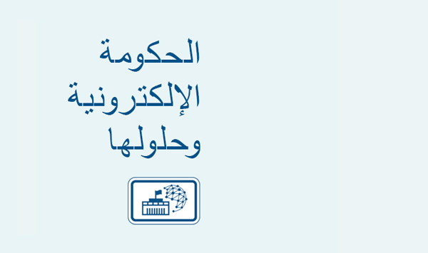

تعتبر الحكومة الإلكترونية نموذجًا لتحول إدارة المعلومات في إطار نشاطات الدولة والحكومة باستخدام تقنيات حاسوبية وأنظمة المعلومات من أجل تيسير نشاطات الدولة والحكومة وتسهيلها، وجعلها أكثر كفاءة، وتسير خدمة المواطنين والمؤسسات العامة والتجارية.

تساهم الحكومة الإلكترونية في دعم تقنيات المعلومات الحاسوبية لكل من:
- السلطة التنفيذية (الحكومة الإلكترونية)؛
- البرلمان (برلمان إلكتروني)؛
- المؤسسات القضائية (العدالة الإلكترونية)؛
غايات الحكومة الإلكترونية وأهدافها:
وضع شروط مسبقة للتعاملات بين المواطنين والجهات الحكومية، والتنمية الشاملة لجميع المواطنين بغض النظر عن وضعهم الاجتماعي أو محل إقامتهم؛
توفير لجميع المواطنين الوصول غير المقيد إلى الخدمات والمعلومات الحكومية؛
تحسين أنظمة سلطات الدولة؛
محاربة الفساد، وإساءة استخدام السلطة على أساس تطبيق أحدث مبادئ إدارية وتقنيات ابتكارية متطورة
التفاعلات داخل "الدولة الإلكترونية":
- سلطات الدولة والمواطنون (مبدأ الحكومة - المواطن، G2C)؛
- سلطات الدولة والأعمال التجارية (مبدأ الحكومة - الأعمال التجارية، G2B)؛
- سلطات الدولة وموظفو الحكومة (مبدأ الحكومة - الموظف، G2E)؛
- بين سلطات الدولة (مبدأ جهة حكومية - جهة حكومية، G2G).
حلول الحكومة الإلكترونية
الحكومة الإلكترونية هو نظام قياسي متعدد الطبقات:
- تقديم المواطنين الوصول المجاني للمعلومات بشأن نشاطات سلطات الدولة والخدمات الإدارية.
- توفير وظائف إدارية مبنية على تقنيات المعلومات والاتصالات المبتكرة
- تقديم خدمات اجتماعية مضمونة وتقديم مساعدة محددة الهدف
- إنشاء آلية شفافة وفعالة للمشتريات الحكومية
- الاحتفاظ بنظام متكامل للمعلومات المرجعية
- توفير تفاعل إلكتروني قيّم من الناحية القانونية على أساس استخدام التوقيع الرقمي
- إدارة مراكز متكاملة متعددة الوظائف لشبكة الخدمات الإدارية
- دعم نظام الدفع القومي (الرابط 1)
- إنشاء سجل سكاني وآلية قوائم الناخبين (الرابط 2)
- حساب الضرائب (الرابط 3) والتزامات السداد الأخرى
- تسجيل تدفق الهجرة
- تسجيل استغلال الأراضي
- استراتيجيات أنشطة سلطات الدولة وضوابط ذات صلة
البطاقة الإلكترونية أداة آمنة للوصول إلى موارد "الدولة الإلكترونية"
البطاقة الإلكترونية هي بطاقة شخصية مؤمنة بوسيط إلكتروني يوفر للمستخدم إمكانية الوصول إلى النظام وتحديد حقوقه ويمكنه أن يشمل تطبيقات مخصصة (المصرفية والنقل وغيرها).
في الوقت نفسه، هو أداة للوصول إلى موارد الدولة الإلكترونية، كما يمكن استخدام أجهزة مختلفة لذلك، حاسوب شخصي، وحاسوب محمول، وهاتف ذكي بتقنيةNFC ، نوافذ المعلومات، ومحطات الدفع.
مميزات الدولة الإلكترونية
تطبيق حلول الدولة الإلكترونية على أرض الواقع سيؤدي إلى إنشاء الآتي:
- البنية التحتية الوطنية للمعلومات والاتصالات هدفها توفير الوصول إلى الموارد المعلوماتية لسلطات الدولة
- منصة تبادل المعلومات ونظم تدفق الوثائق الإلكترونية لكيانات الدولة
- بوابة "الدولة الإلكترونية" الموحدة والمتكاملة، وبوابات تفاعلية لسلطات الدولة
- أنظمة المعلومات المتعلقة بـ "السجل السكاني القومي الموحد" (الرابط 5) و "السجل القومي للكيانات القانونية"
- الأرشيف القومي الإلكتروني
- النظم القومية لإجراءات الشراء والتدبير لاحتياجات الحكومة الإلكترونية والدفعات الإلكترونية ومحاسبة التدفقات المالية
- المعلومات المتكاملة والنظام التحليلي لتبادل البيانات في المجالات الاجتماعية
- نظام المعلومات والتحليل لإنشاء تقارير إدارية، التحليل والتنبؤ، التخطيط ومراقبة أنشطة سلطات الدولة
- مرفق المفاتيح الإلكترونية العمومية من أجل تزويد جميع المواطنين بتوقيع رقمي بلا مقابل
- شبكة قومية من المراكز المتكاملة متعددة الوظائف للخدمات الإدارية ونوافذ (أكشاك) الخدمة الذاتية القائمة على الشبكة الموحدة من أجل توفير الوصول إلى "الدولة الإلكترونية"
- البنية التحتية لتوفير وصول متخصص آمن إلى الموارد المعلوماتية (المكتبات، والمدارس إلخ)
- البطاقة الذكية الملحقة بتطبيق الهوية والتوقيع الرقمي كأداة للوصول إلى خدمات "الدولة الإلكترونية"
- البنية التحتية لتهيئة دورة حياة البطاقات الإلكترونية مع تطبيق الهوية والتوقيع الرقمي
- النظام المركزي لمعالجة المكالمات الهاتفية (مركز الاتصال)
- نظام حماية المعلومات المتكامل
- إمكانية ترقية أي حل من حلول الدولة الإلكترونية وفقًا للواجبات والمهام والمتطلبات الملحة لدى الدولة والحكومة
المنفعة من الدولة الإلكترونية
استخدام التوقيع الرقمي، وخدمات إدارية عن بعد، وتحسين تدفق المستندات وتبادل بها بين دوائر إدارية، حفظ آمن للسجلات، رصد نشاطات إدارات الدولة والعديد من الأعمال الأخرى لا بد منها لقيام دولة إلكترونية عصرية كفؤة بحد ذاتها.
وفي المقام الأول، إدخال حلول الحكومة الإلكترونية بصفتها أدوات للإدارة العامة سيؤثر على البنية التنظيمية والوظائفية للدولة، وتحسين هذه الحلول وتسيير عملها سيرتفع من مستوى التمويلات الموجودة الحالية وسيأتي بجديدة منها في الاقتصاد القومي.
وإلى جانب ذلك، فإن التقليل من العامل البشري تدريجيًا سيؤدي إلى الحد من الفساد ورفع المستوى الأمني في البلد (الرابط 6)، ومن المؤكد أن المواطنين والمجتمع الدولي سيقدرون هذه الأمور إيجابيًا.
التأثير الاقتصادي
يؤدي إدخال حلول الحكومة الإلكترونية إلى زيادة إنتاجية عمل السلطات ودوائر الدولة الإدارية بشكل عام، وتقليل من تكلفة حفظ سجلات الدولة وتحديثها، وتقليل من تكلفة تقديم الخدمات الإدارية، وزيادة الرقابة على التدفقات المالية، والسماح ببناء الإستراتيجيات الأكثر فعالية من أجل تنمية الدولة وازدهارها.